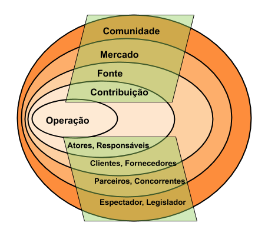

O Diagrama de Partes Interessadas é um artefato com o objetivo de clarificar o problema e compartilhar conhecimento determinando, de forma abrangente, o escopo de partes (stakeholders) direta ou indiretamente envolvidas no problema e no impacto de uma solução.
O artefato distribui os stakeholders em categorias que representam forças de informação distintas em relação ao problema em análise (Baranauskas et al., 2013).
São as categorias de stakeholders:

Representação do Diagrama de Partes Interessadas. Adaptado de Baranauskas et al. (2013)
Referências
Baranauskas, M. C. C., Martins, M. C. e Valente, J. A. (2013). Codesign de Redes Digitais: tecnologia e educação a serviço da inclusão social. Penso Editora.